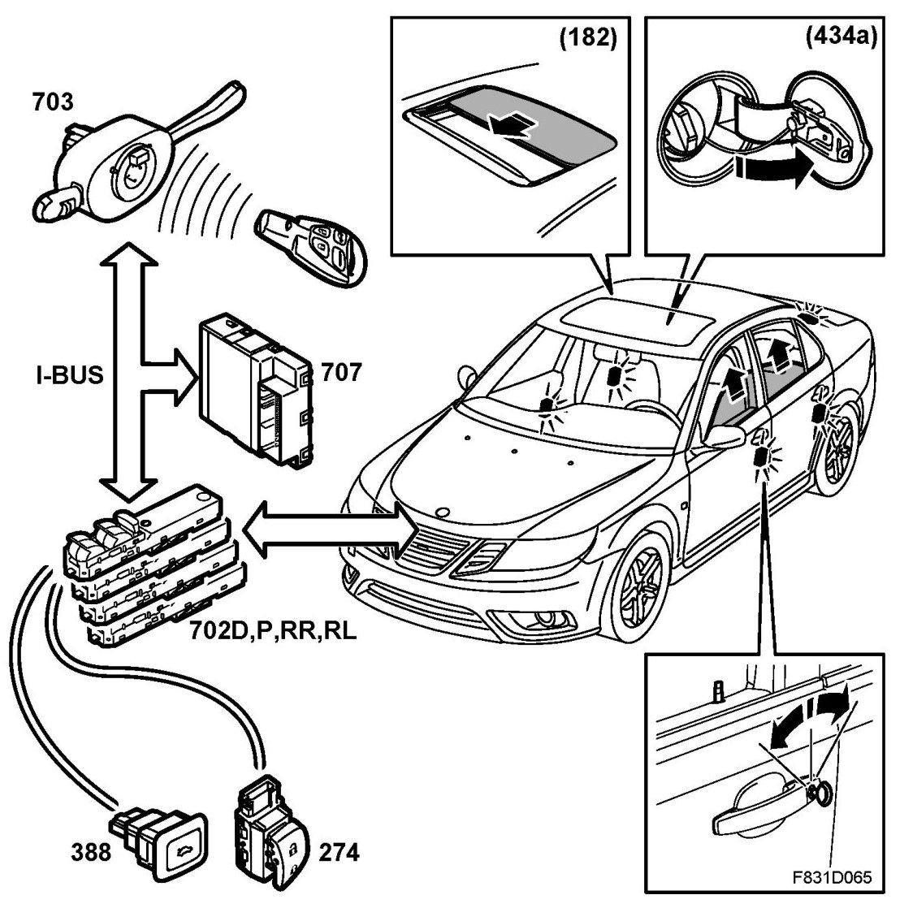

Central Locking System, Brief Description
Central Locking System, Brief Description
Overview

- Key/remote control
- Door switches (54FL, FR, RL, RR)
- Door control module (702D, P, RL, RR)
- Column Integration Module CIM (703a)
- Control module, BCM (707)
- Filler flap solenoid, central locking system (434a)
- Switch, boot lid (388) (US/CA)
- Sunroof module, SRM (182)
- Central locking system motor (184)
- Central locking system door motor (184FL, FR, RL, RR)
The central locking system is a part of the car's anti-theft system and prevents unauthorised persons from entering the car. The central locking system logic is in the BCM.
The door lock can be operated from inside the car using the central locking system buttons on both front doors and using the mechanical lock buttons on each door. The front left door can be locked or unlocked from the outside using a mechanical emergency key, which is inserted in the combined remote control/ignition key. The door locks can be locked or unlocked from the outside using the remote control.
The windows and sunroof can be operated from the remote control on cars with pinch protection for the window lifts. The boot lid lock can be operated using a button on the front door or using remote control.